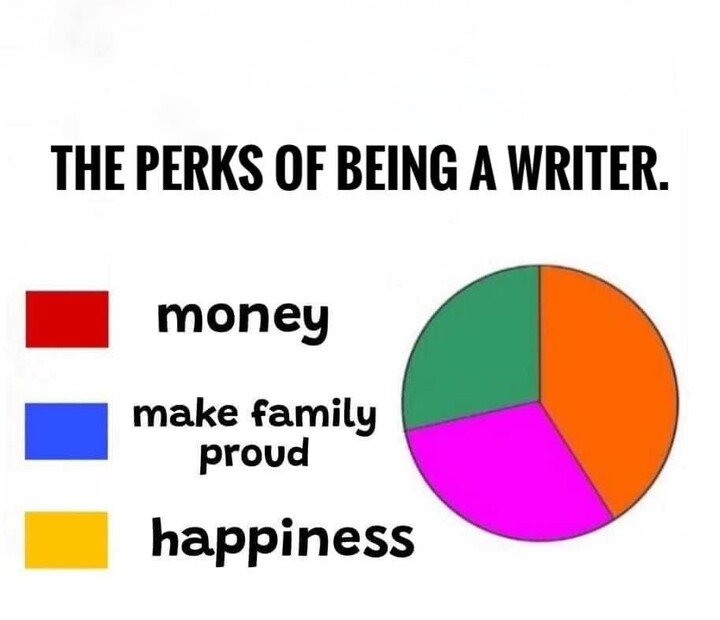
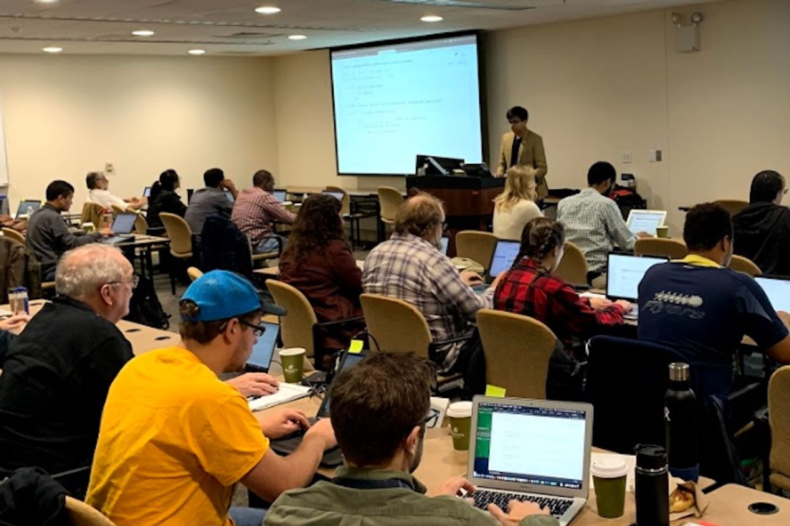

Writing a Technical Book

Greg Wilson
http://third-bit.com/talks/writing-book/



Jess started writing VB macros for Excel in a startup and never looked back. After spending three years doing front-end JavaScript they now want to learn how to build back-end applications, but feel insecure about never having studied computer science. This material will flesh out their understanding of callbacks, classes, and data structures, and teach them some common design patterns.
No book can serve more than one group well.



“An author’s job is to produce the manure in which an editor grows something worth reading.”
— Tom Wilkie